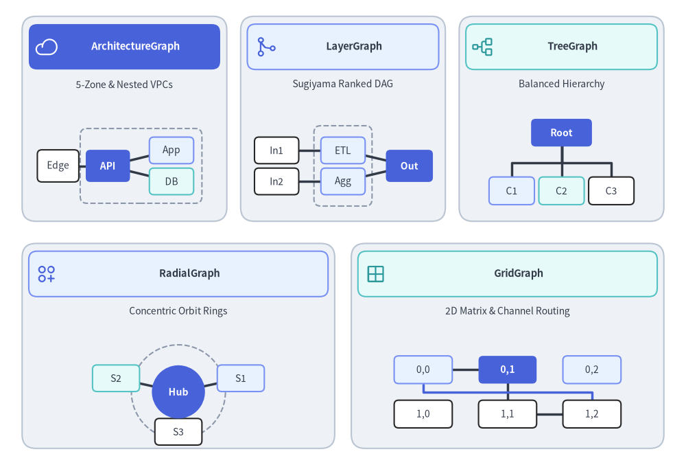
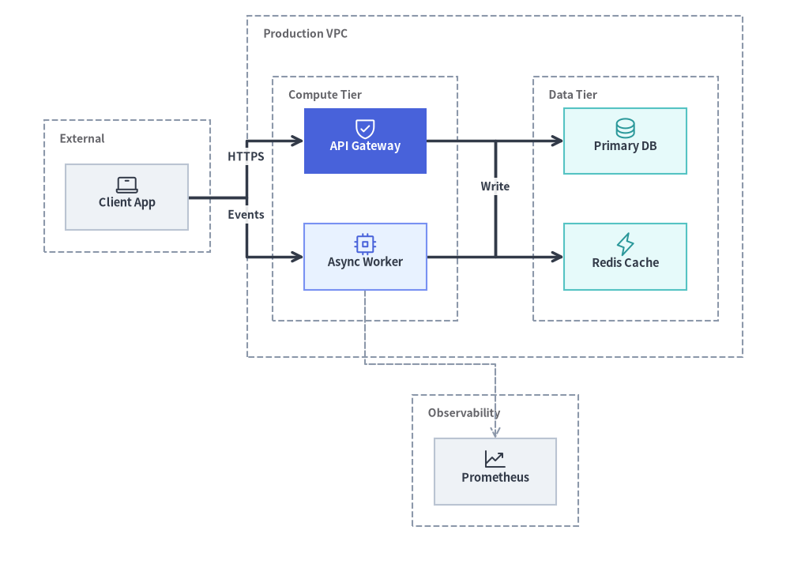
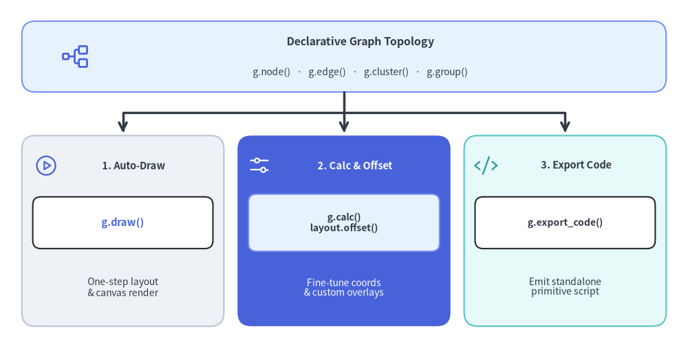
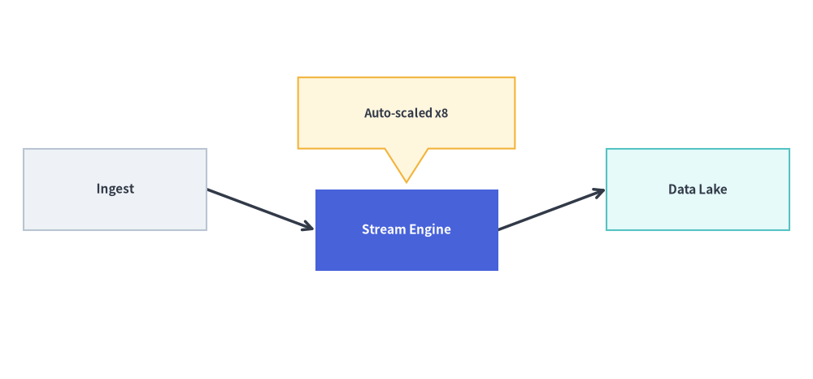

Graph Engine Overview (drawlib.graph)
drawlib.graph provides a declarative auto-layout graph engine powered by five specialized layout solvers (ArchitectureGraph, LayerGraph, TreeGraph, RadialGraph, and GridGraph).
Instead of manually computing (x, y) coordinates for every vertex and container when drafting a complex topology, you declare structural relationships—nodes, edges, and clusters—and let Drawlib's pure-Python layout algorithms calculate clean coordinates, container bounding boxes, and orthogonal or radial edge routes automatically.

Source Code
import math
from drawlib.canvas import save, setup
from drawlib.icons import phosphor
from drawlib.lines import line, lines
from drawlib.shapes import circle, rectangle
from drawlib.styles import Styles
from drawlib.text import text
setup(width=124, height=84)
# Row 1: 3 Cards (ArchitectureGraph, LayerGraph, TreeGraph)
row1_cards = [
(22.5, 62.5, 37.0, "ArchitectureGraph", "5-Zone & Nested VPCs", phosphor.cloud, Styles.PrimaryFlat, Styles.WhiteBold, Styles.White),
(62.0, 62.5, 37.0, "LayerGraph", "Sugiyama Ranked DAG", phosphor.git_merge, Styles.PrimaryNeutral, Styles.DarkBold, Styles.Primary),
(101.5, 62.5, 37.0, "TreeGraph", "Balanced Hierarchy", phosphor.tree_structure, Styles.SecondaryNeutral, Styles.DarkBold, Styles.Secondary),
]
# Row 2: 2 Cards (RadialGraph, GridGraph)
row2_cards = [
(32.25, 21.5, 56.5, "RadialGraph", "Concentric Orbit Rings", phosphor.circles_three_plus, Styles.PrimaryNeutral, Styles.DarkBold, Styles.Primary),
(91.75, 21.5, 56.5, "GridGraph", "2D Matrix & Channel Routing", phosphor.grid_four, Styles.SecondaryNeutral, Styles.DarkBold, Styles.Secondary),
]
for cx, cy, cw, title, subtitle, icon_fn, hdr_style, hdr_text_style, ic_style in row1_cards + row2_cards:
rectangle((cx, cy), width=cw, height=37.0, style=Styles.Neutral.patch(shape_r=2.5))
rectangle((cx, cy + 13.0), width=cw - 2.4, height=8.2, style=hdr_style.patch(shape_r=1.5))
icon_fn((cx - cw / 2.0 + 4.4, cy + 13.0), width=4.2, style=ic_style)
text((cx + 2.0, cy + 13.0), title, style=hdr_text_style.patch(text_size=10.5))
text((cx, cy + 6.2), subtitle, style=Styles.Dark.patch(text_size=10.0))
# 1. ArchitectureGraph miniature (cx=22.5, y=46..65)
rectangle((25.5, 54.0), width=22.0, height=13.5, style=Styles.MutedDashed.patch(shape_r=1.2))
line((10.5, 54.0), (19.5, 54.0), style=Styles.DarkBold)
line((19.5, 54.0), (31.0, 56.8), style=Styles.DarkBold)
line((19.5, 54.0), (31.0, 51.2), style=Styles.DarkBold)
rectangle((10.5, 54.0), width=7.5, height=5.8, style=Styles.White.patch(shape_r=0.8), text="Edge", text_style=Styles.Dark.patch(text_size=10.0))
rectangle((19.5, 54.0), width=8.0, height=5.8, style=Styles.PrimaryFlat.patch(shape_r=0.8), text="API", text_style=Styles.WhiteBold.patch(text_size=10.0))
rectangle((31.0, 56.8), width=8.0, height=4.8, style=Styles.PrimaryNeutral.patch(shape_r=0.8), text="App", text_style=Styles.Dark.patch(text_size=10.0))
rectangle((31.0, 51.2), width=8.0, height=4.8, style=Styles.SecondaryNeutral.patch(shape_r=0.8), text="DB", text_style=Styles.Dark.patch(text_size=10.0))
# 2. LayerGraph miniature (cx=62.0)
rectangle((62.0, 54.0), width=10.5, height=14.5, style=Styles.MutedDashed.patch(shape_r=1.2))
line((50.0, 56.8), (62.0, 56.8), style=Styles.DarkBold)
line((50.0, 51.2), (62.0, 51.2), style=Styles.DarkBold)
line((62.0, 56.8), (74.0, 54.0), style=Styles.DarkBold)
line((62.0, 51.2), (74.0, 54.0), style=Styles.DarkBold)
rectangle((50.0, 56.8), width=8.0, height=4.8, style=Styles.White.patch(shape_r=0.8), text="In1", text_style=Styles.Dark.patch(text_size=10.0))
rectangle((50.0, 51.2), width=8.0, height=4.8, style=Styles.White.patch(shape_r=0.8), text="In2", text_style=Styles.Dark.patch(text_size=10.0))
rectangle((62.0, 56.8), width=8.0, height=4.8, style=Styles.PrimaryNeutral.patch(shape_r=0.8), text="ETL", text_style=Styles.Dark.patch(text_size=10.0))
rectangle((62.0, 51.2), width=8.0, height=4.8, style=Styles.PrimaryNeutral.patch(shape_r=0.8), text="Agg", text_style=Styles.Dark.patch(text_size=10.0))
rectangle((74.0, 54.0), width=8.5, height=5.8, style=Styles.PrimaryFlat.patch(shape_r=0.8), text="Out", text_style=Styles.WhiteBold.patch(text_size=10.0))
# 3. TreeGraph miniature (cx=101.5)
lines([(101.5, 58.0), (101.5, 54.5), (92.5, 54.5), (92.5, 51.5)], style=Styles.DarkBold)
lines([(101.5, 58.0), (101.5, 54.5), (101.5, 51.5)], style=Styles.DarkBold)
lines([(101.5, 58.0), (101.5, 54.5), (110.5, 54.5), (110.5, 51.5)], style=Styles.DarkBold)
rectangle((101.5, 60.0), width=11.0, height=5.0, style=Styles.PrimaryFlat.patch(shape_r=0.8), text="Root", text_style=Styles.WhiteBold.patch(text_size=10.0))
rectangle((92.5, 49.5), width=8.2, height=5.0, style=Styles.PrimaryNeutral.patch(shape_r=0.8), text="C1", text_style=Styles.Dark.patch(text_size=10.0))
rectangle((101.5, 49.5), width=8.2, height=5.0, style=Styles.SecondaryNeutral.patch(shape_r=0.8), text="C2", text_style=Styles.Dark.patch(text_size=10.0))
rectangle((110.5, 49.5), width=8.2, height=5.0, style=Styles.White.patch(shape_r=0.8), text="C3", text_style=Styles.Dark.patch(text_size=10.0))
# 4. RadialGraph miniature (cx=32.25, cy=13.2)
rcx, rcy = 32.25, 13.2
circle((rcx, rcy), radius=8.5, style=Styles.MutedDashed)
for deg, lbl, st in [(20, "S1", Styles.PrimaryNeutral), (160, "S2", Styles.SecondaryNeutral), (270, "S3", Styles.White)]:
rad = math.radians(deg)
x1, y1 = rcx + 12.0 * math.cos(rad), rcy + 7.2 * math.sin(rad)
line((rcx, rcy), (x1, y1), style=Styles.DarkBold)
rectangle((x1, y1), width=8.5, height=4.8, style=st.patch(shape_r=0.8), text=lbl, text_style=Styles.Dark.patch(text_size=10.0))
circle((rcx, rcy), radius=4.8, style=Styles.PrimaryFlat, text="Hub", text_style=Styles.WhiteBold.patch(text_size=10.0))
# 5. GridGraph miniature (cx=91.75)
g_cols = [76.5, 91.75, 107.0]
g_rows = [17.2, 9.2]
line((76.5, 17.2), (91.75, 17.2), style=Styles.DarkBold)
line((91.75, 17.2), (91.75, 9.2), style=Styles.DarkBold)
line((91.75, 9.2), (107.0, 9.2), style=Styles.DarkBold)
lines([(76.5, 14.5), (76.5, 13.2), (107.0, 13.2), (107.0, 11.8)], style=Styles.PrimaryBold)
for r_idx, gy in enumerate(g_rows):
for c_idx, gx in enumerate(g_cols):
is_hero = (r_idx == 0 and c_idx == 1)
cell_st = Styles.PrimaryFlat if is_hero else (Styles.PrimaryNeutral if r_idx == 0 else Styles.White)
txt_st = Styles.WhiteBold.patch(text_size=10.0) if is_hero else Styles.Dark.patch(text_size=10.0)
rectangle((gx, gy), width=10.5, height=5.0, style=cell_st.patch(shape_r=0.8), text=f"{r_idx},{c_idx}", text_style=txt_st)
save()
1. Why Declarative Auto-Layout Graphs? (drawlib.graph vs. drawlib.diagrams)
from drawlib.canvas import save, setup
from drawlib.graph import ArchitectureGraph
from drawlib.icons import phosphor
from drawlib.styles import Styles
setup(width=126, height=90)
g = ArchitectureGraph(
direction="LR",
container_sep=6.0,
default_node_width=19.5,
default_node_height=10.5,
default_node_text_style=Styles.DarkBold.patch(text_size=10.5),
)
# External client zone pinned to the left
g.cluster("clients", ["client"], label="External", pos="left", padding=3.5)
g.node("client", "\nClient App", style=Styles.Neutral)
# Cloud VPC container with nested Compute and Data tiers in the center
g.group("vpc", "Production VPC", pos="center", padding=4.0)
g.cluster("app_tier", ["api", "worker"], label="Compute Tier", parent="vpc", order=1, padding=5.0)
g.cluster("data_tier", ["db", "cache"], label="Data Tier", parent="vpc", order=2, padding=5.0)
# 50%+ Neutral baseline with a single PrimaryFlat focal node
g.node("api", "\nAPI Gateway", style=Styles.PrimaryFlat, text_style=Styles.WhiteBold.patch(text_size=10.5))
g.node("worker", "\nAsync Worker", style=Styles.PrimaryNeutral)
g.node("db", "\nPrimary DB", style=Styles.SecondaryNeutral)
g.node("cache", "\nRedis Cache", style=Styles.SecondaryNeutral)
# Observability cluster pinned to the bottom
g.cluster("obs", ["metrics"], label="Observability", pos="bottom", padding=3.5)
g.node("metrics", "\nPrometheus", style=Styles.Neutral)
g.edge("client", "api", "HTTPS")
g.edge("client", "worker", "Events")
g.edge("api", "cache", "Read")
g.edge("worker", "db", "Write")
g.edge("worker", "metrics", style=Styles.MutedDashed)
ox, oy = -3.0, -4.0
layout = g.draw(xy=(ox, oy), width=126.0, height=90.0)
# Overlay standardized Phosphor icons at computed node coordinates
for nid, icon_fn, st in [
("client", phosphor.laptop, Styles.Dark),
("api", phosphor.shield_check, Styles.White),
("worker", phosphor.cpu, Styles.Primary),
("db", phosphor.database, Styles.Secondary),
("cache", phosphor.lightning, Styles.Secondary),
("metrics", phosphor.chart_line_up, Styles.Dark),
]:
n = layout.nodes[nid]
icon_fn((n.x + ox, n.y + oy + 2.0), width=4.0, style=st)
save()

Drawlib offers two complementary approaches to technical diagramming:
| Dimension | drawlib.graph (Auto-Layout Graphs) |
drawlib.diagrams (Coordinate Diagrams) |
|---|---|---|
| Coordinate Placement | Automatic: Solvers calculate (x, y) coordinates from topology (node, edge, cluster). |
Deterministic: You specify exact (x, y) coordinates (d.add(node, xy=(x, y))). |
| Primary Strength | Solving the Cold-Start Problem; rapid topology prototyping, large DAGs, trees, and matrices. | Domain-specific notations and rich icon cards (GcpIcon, PhosphorIcon), UML compartments, Crow's Foot ER tables, and chronological lifelines. |
| Fine-Tuning | Post-layout nudging via layout.offset(id, dx, dy) or scaffolding to primitive code via g.export_code(). |
Direct coordinate control, explicit attachment sides (start_side, end_side), and Junction bus lines. |
| Animation Support | Full visibility (show=False) and scale support on nodes, edges, clusters, and GraphLayout (Animating Graphs). |
Full visibility (show=False) and scale support (Animating Diagrams). |
2. The Five Specialized Layout Solvers
Rather than forcing every graph through a single generic force-directed or Sugiyama heuristic, drawlib.graph provides five purpose-built solvers tailored to distinct topological structures:
| Solver Class | Layout Algorithm | Primary Use Cases | Key Helper Methods | Guide Link |
|---|---|---|---|---|
ArchitectureGraph |
2-Level Macro/Micro Packing + 5-Zone Compass | Cloud VPCs, nested subnets, multi-zone microservices | .group(), .cluster(parent=..., pos=...) |
ArchitectureGraph |
LayerGraph |
Sugiyama Hierarchical DAG (Cycle removal, Barycenter ordering) | CI/CD pipelines, ETL dataflows, layered dependency DAGs | .tier(name, nodes, layer=...), node(..., layer=...) |
LayerGraph |
TreeGraph |
Reingold-Tilford / Buchheim Compact Tree | Org charts, ASTs, decision trees, call hierarchies | .child(parent, child_id, ...) |
TreeGraph |
RadialGraph |
Concentric BFS Rings & Angular Sector Allocation | Hub-and-spoke meshes, Pub/Sub topologies, dependency radars | .spoke(parent, spoke_id, ring=...), draw_ring_guides=True |
RadialGraph |
GridGraph |
2D Matrix Assignment & Smart Channel Routing | Service catalogs, state matrices, tabular component grids | .cell(id, row, col), .cluster_row(), .cluster_column() |
GridGraph |
3. Shared Architecture (BaseGraph)
All five solvers inherit from BaseGraph and share a unified API for building topologies, calculating layouts, rendering to the canvas, and exporting standalone code:
from drawlib.graph import (
ArchitectureGraph,
BaseGraph,
Cluster,
ClusterLayout,
Edge,
EdgeLayout,
GraphLayout,
GridGraph,
LayerGraph,
Node,
NodeLayout,
RadialGraph,
TreeGraph,
)
3.1. Building Topologies (node, edge, cluster, group)
g.node(...) -> Node
Registers a node in the graph and returns a mutable Node dataclass instance.
- Signature:
g.node( id: str, label: str | None = None, *, style: Style | None = None, text_style: Style | None = None, shape: Literal["rectangle", "circle"] = "rectangle", width: float | None = None, height: float | None = None, ring: int | None = None, row: int | None = None, col: int | None = None, layer: int | None = None, group: str | None = None, subgroup: str | None = None, show: bool = True, ) -> Node - Note:
drawlib.graphnodes are geometric shapes ("rectangle"or"circle", with corner rounding controlled viastyle.shape_r) and do not take aniconparameter. For icon-centric architecture cards (GcpIcon,PhosphorIcon), useArchitectureDiagramor overlay icons at computedlayout.nodes[id].xycoordinates.
g.edge(...) -> Edge
Registers a directed or undirected edge between src and dst (automatically creating undeclared endpoint nodes with default styling).
- Signature:
g.edge( src: str, dst: str, label: str | None = None, *, style: Style | None = None, text_style: Style | None = None, arrow_head: Literal["->", "<-", "<->", "-"] = "->", line_style: Literal["solid", "dashed", "dotted"] | None = None, show: bool = True, ) -> Edge
g.cluster(...) -> Cluster and g.group(...) -> Cluster
Groups a list of nodes inside a labeled boundary rectangle (defaulting to Styles.MutedDashed).
- Signatures:
g.cluster( id: str, nodes: list[str], label: str | None = None, *, style: Style | None = None, text_style: Style | None = None, padding: float = 4.0, parent: str | None = None, order: int | None = None, pos: Literal["top", "bottom", "left", "right", "center"] | None = None, show: bool = True, ) -> Cluster g.group( id: str, label: str | None = None, *, nodes: list[str] | None = None, style: Style | None = None, text_style: Style | None = None, padding: float = 4.0, parent: str | None = None, order: int | None = None, pos: Literal["top", "bottom", "left", "right", "center"] | None = None, show: bool = True, ) -> Cluster
3.2. Layout Lifecycle (calc, offset, draw, export_code)
drawlib.graph supports a progressive three-stage workflow:

Source Code
from drawlib.canvas import save, setup
from drawlib.icons import phosphor
from drawlib.lines import line, lines
from drawlib.shapes import rectangle
from drawlib.styles import Styles
from drawlib.text import text
setup(width=126, height=64)
# Top Header / Input Node
rectangle(
(63, 53.5),
width=118,
height=13,
style=Styles.PrimaryNeutral.patch(shape_r=2.5),
)
phosphor.tree_structure((14, 53.5), width=5.5, style=Styles.Primary)
text((66, 56.2), "Declarative Graph Topology", style=Styles.DarkBold.patch(text_size=11.5))
text((66, 50.6), "g.node() · g.edge() · g.cluster() · g.group()", style=Styles.Dark.patch(text_size=10.0))
# Orthogonal fan-out lines from top header into the 3 workflow cards
line((63, 47.0), (63, 39.5), arrow_head="->", style=Styles.DarkBold)
lines([(63, 43.2), (22.5, 43.2), (22.5, 39.5)], arrow_head="->", style=Styles.DarkBold)
lines([(63, 43.2), (103.5, 43.2), (103.5, 39.5)], arrow_head="->", style=Styles.DarkBold)
# Card 1: Direct Auto-Draw (Neutral)
rectangle((22.5, 21.5), width=37, height=35, style=Styles.Neutral.patch(shape_r=2.5))
phosphor.play_circle((8.5, 33.5), width=4.4, style=Styles.Primary)
text((24.5, 33.5), "1. Auto-Draw", style=Styles.DarkBold.patch(text_size=10.5))
rectangle((22.5, 23.0), width=33, height=9.5, style=Styles.White.patch(shape_r=1.5))
text((22.5, 23.0), "g.draw()", style=Styles.PrimaryBold.patch(text_size=10.5))
text((22.5, 11.2), "One-step layout\n& canvas render", style=Styles.Dark.patch(text_size=10.0))
# Card 2: Calculate, Offset & Overlay (PrimaryFlat focal card)
rectangle((63, 21.5), width=39, height=35, style=Styles.PrimaryFlat.patch(shape_r=2.5))
phosphor.sliders_horizontal((47.5, 33.5), width=4.4, style=Styles.White)
text((65.0, 33.5), "2. Calc & Offset", style=Styles.WhiteBold.patch(text_size=10.5))
rectangle((63, 23.0), width=35, height=10.5, style=Styles.PrimaryNeutral.patch(shape_r=1.5))
text((63, 23.0), "g.calc()\nlayout.offset()", style=Styles.DarkBold.patch(text_size=10.0))
text((63, 11.0), "Fine-tune coords\n& custom overlays", style=Styles.White.patch(text_size=10.0))
# Card 3: Export Standalone Code (SecondaryNeutral)
rectangle((103.5, 21.5), width=37, height=35, style=Styles.SecondaryNeutral.patch(shape_r=2.5))
phosphor.code((89.0, 33.5), width=4.4, style=Styles.Secondary)
text((105.5, 33.5), "3. Export Code", style=Styles.DarkBold.patch(text_size=10.5))
rectangle((103.5, 23.0), width=33, height=9.5, style=Styles.White.patch(shape_r=1.5))
text((103.5, 23.0), "g.export_code()", style=Styles.DarkBold.patch(text_size=10.0))
text((103.5, 11.2), "Emit standalone\nprimitive script", style=Styles.Dark.patch(text_size=10.0))
save()
- Compute Layout (
layout = g.calc(*, width=None, height=None, margin=10.0) -> GraphLayout):- Solves all coordinates without drawing onto the canvas.
- Returns a
GraphLayoutinstance containing:layout.nodes:dict[str, NodeLayout]— eachNodeLayoutexposes.id,.xy,.x,.y,.width,.height,.left,.right,.top,.bottom,.style,.text_style,.label,.shape, and.show.layout.edges:list[EdgeLayout]— eachEdgeLayoutexposes.src,.dst,.src_port,.dst_port,.waypoints,.points,.label,.style,.text_style,.arrow_head, and.show.layout.clusters:dict[str, ClusterLayout]— eachClusterLayoutexposes.id,.label,.bbox,.cx,.cy,.width,.height,.left,.right,.top,.bottom,.style,.text_style,.shape, and.show.layout.width,layout.height: Target canvas dimensions.
- Post-Layout Fine-Tuning (
layout.offset(node_id, dx=0.0, dy=0.0) -> None):- Shifts a specific node by
(dx, dy)and automatically updates the attachment ports of all incident edges. - You can also inspect
layout.nodes[id].xand.yto attach custom primitives fromdrawlib.shapesordrawlib.icons.
- Shifts a specific node by
- Render to Canvas (
g.draw(*, xy=(0.0, 0.0), width=None, height=None, margin=10.0, scale=1.0) -> GraphLayoutorlayout.draw(*, xy=(0.0, 0.0), scale=1.0) -> None):- Renders visible clusters, edges, and nodes in proper z-order onto the active canvas, translated by
xyand proportionally scaled byscale. - Fixed-Layout Visibility (
show=False): Settingshow=Falseon any node, edge, or cluster preserves its slot duringcalc()so remaining elements never jump, while skipping hidden elements (and edges attached to hidden endpoint nodes) duringdraw().
- Renders visible clusters, edges, and nodes in proper z-order onto the active canvas, translated by
- Export Editable Primitive Code (
g.export_code(*, width=None, height=None, margin=10.0) -> strorlayout.to_code() -> str):- Generates a complete, self-contained Drawlib Python script using
setup(),rectangle(),circle(),line(), andsave()with all solved coordinates baked in as semantic variables (api_xy = (85.0, 62.0)).
- Generates a complete, self-contained Drawlib Python script using
from drawlib.canvas import save, setup
from drawlib.graph import LayerGraph
from drawlib.shapes import bubblespeech
from drawlib.styles import Styles
setup(width=120, height=56)
g = LayerGraph(
direction="LR",
default_node_width=27.0,
default_node_height=12.0,
default_node_text_style=Styles.DarkBold.patch(text_size=11.0),
)
g.node("ingest", "Ingest", style=Styles.Neutral)
g.node("process", "Stream Engine", style=Styles.PrimaryFlat, text_style=Styles.WhiteBold.patch(text_size=11.0))
g.node("store", "Data Lake", style=Styles.SecondaryNeutral)
g.edge("ingest", "process")
g.edge("process", "store")
# 1. Calculate layout without rendering
layout = g.calc(margin=6.0)
# 2. Fine-tune the middle node position and draw the graph
layout.offset("process", dy=-6.0)
layout.draw()
# 3. Overlay a custom primitive anchored to the computed node coordinates
proc = layout.nodes["process"]
bubblespeech(
(proc.x - 16.0, proc.y + 12.0),
width=32.0,
height=10.5,
tail_edge="bottom",
tail_start_ratio=0.4,
tail_end_ratio=0.6,
tail_vertex_xy=(proc.x, proc.y + proc.height / 2.0 + 1.0),
style=Styles.WarningNeutral,
text="Auto-scaled x8",
text_style=Styles.DarkBold.patch(text_size=10.5),
)
save()

4. Best Practices & 50%+ Neutral Baseline
- Override
default_node_style=Styles.Neutralfor the 50%+ Neutral Baseline:- By default,
BaseGraphinitializesdefault_node_style=Styles.PrimaryFlatif none is supplied. In multi-node graphs, leaving every node inStyles.PrimaryFlatcreates a visually heavy, over-saturated diagram. - Pass
default_node_style=Styles.Neutralin the graph constructor (or style supporting nodes inStyles.Neutral,Styles.PrimaryNeutral, andStyles.SecondaryNeutral), and explicitly passstyle=Styles.PrimaryFlat, text_style=Styles.WhiteBoldon only 1–2 primary focal nodes.
- By default,
- Use
calc()+offset()Before Exporting Code:- Start with
g.draw()to iterate rapidly on your topology. If a specific node or edge needs slight adjustment, switch tolayout = g.calc()andlayout.offset(id, dx=..., dy=...)—or callg.export_code()once the structure stabilizes to customize individual primitives freely.
- Start with
5. Chapter Navigation
Explore each of the five graph solvers in detail:
- ArchitectureGraph: Multi-tier cloud topologies, nested VPC/subnet clusters, and 5-zone compass placement.
- LayerGraph: Sugiyama hierarchical DAGs, CI/CD pipelines, and explicit rank/tier pinning.
- TreeGraph: Balanced parent-child trees (
TBandLR) using the Reingold-Tilford / Buchheim algorithm. - RadialGraph: Hub-and-spoke networks and multi-ring concentric dependency radars.
- GridGraph: 2D
(row, col)matrix placement, row/column clusters, and smart channel routing.